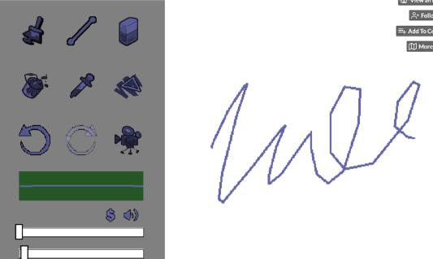
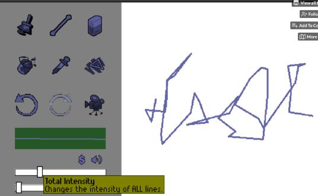
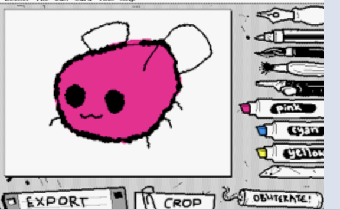
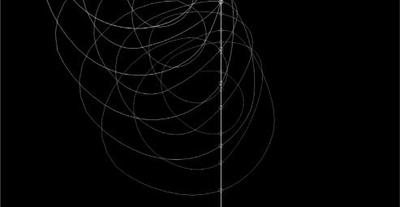
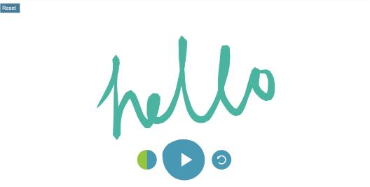

Vanessa Fan's Mediated Expression Studio Work
s4092962
Introduction Exercise
Hi, my name is Vanessa (she/her). I was born in China and moved to Melbourne when I was four. I chose Digital Media because I am passionate about filming, content creation and web designing. My favourite emoji is the classic smiley face since it reminds me to always keep a positive attitude. I am most comfortable using Premiere Pro, as I have used it extensively for my previous assignments and personal vlog editing. My coding experience is still quite limited, with only one semester of Interactive Media where I learned the basics. I am looking forward to develop my coding skills further in this course.
This is the link to my GitHub profile: Link to my GitHub
<Reference Websites
In-class experiments
Studio project speculation
Framing
The project I am developing is an interactive and expressive website that sits between a drawing tool and a sound experiment. I do not want it to function as a professional tool like Photoshop or Procreate, as it is not about creating layers or producing polished outcomes. I also do not see it as a game, since there are no goals or rules. Instead, it is intended to be an open space where users can interact freely in their own way. From my experiments, I found that adding sound makes the interaction feel more immersive and emotional. It transforms drawing into a more engaging and personal experience. For example, in my independent research on the *Kandinsky Experiment*, the webpage produces different sounds as users draw. I found this particularly interesting because it turns drawing into both a visual and auditory creative process. This strongly influenced my idea of incorporating sound, as I want users to experience drawing in a more immersive and enjoyable way. *Shake Art Deluxe* and *WigglyPaint* are similar in that they are both drawing platforms with various tools that make drawings feel more dynamic. They encourage experimentation rather than precision. *Shake Art Deluxe*, in particular, introduces a sense of instability through jittery lines, allowing users to control intensity, speed, and width. However, I am unsure whether to include this feature, as I found it somewhat messy and difficult to control. Technically, I plan to build this as a web-based project using GitHub. I will use Konva for drawing and interaction, as I have already worked with it in class. For sound, I will use Tone.js to generate and control audio. Both tools should enable me to create an expressive experience that is simple, interactive, accessible, and relaxing. Here, I have used two images comparision on 'Shake Art Deluxe'. The first image is when users draw a normal line, and the second image is when users adjust the intensity of the line on the right hand side. It looks quite messy, however still a really interesting tool to experiment with. Similarly to mine, I will be allowing users to change the type of instrument/sound if I were design my own webpage.


Purpose
During this semester, I am planning to create a website that is slow and calming, where users can doodle on the page while hearing sound generated through their drawing. When I get stressed from assignments, I often do colouring-in on paper to relax. This personal habit inspired me to develop this project in a digital form. Furthermore, I am interested in creating something that feels more like a space to relax and be expressive, rather than a tool for producing something polished or finished. At this stage, I want the webpage to function as a simple drawing board where users can use pencil-like tools to adjust thickness, change colours, experiment with different textures, and add basic shapes. Additionally, I do not want this website to feel like a music app such as GarageBand or a professional drawing program like Photoshop. Instead, I want it to be a soft, interactive space where drawing and sound blend together. As users draw, ambient music will play in response to their movements, and they will be able to change instruments to create different moods. I plan to avoid loud instruments such as drums or trumpets, and instead use softer sounds like piano, flute, and harp to create a peaceful experience. In particular, *WigglyPaint* strongly influenced my approach. The website transforms simple user drawings into animated visuals with a “wiggly” and lively quality, making the experience more playful and engaging. *Cycle* also influenced me, especially in how the interaction feels continuous and does not have a clear ending. As users draw, their lines are repeated and transformed over time, gradually forming layered, flower-like patterns. Additionally, sound is triggered when the drawing lines meet the central intersection, adding another layer of feedback. Overall, I aim to create an experience where users can simply draw, listen, and spend time interacting without pressure. Here below, is a user's drawing using WigglyPaint, I really like this drawing because it make the bee look alive.

Worth
I want my drawing website to be easy to use and beginner-friendly, making it suitable for users of all ages. Many drawing apps and creative software I have used are quite structured and focused on outcomes, which makes me feel like I need to be “good” to use them effectively. For example, Procreate can feel professional and difficult for beginners to navigate. Therefore, I want this project to remove that pressure and create a space where even simple doodles feel meaningful. From my experiments in class with information design, feedback, and mapping, I realised that interaction becomes much more engaging when it is immediate and easy to understand. From the examples provided in class, I noticed that I am more willing to explore when I am not overly guided or told exactly what to do. Therefore, I want to keep the interface simple, allowing users to learn through interaction by experimenting with different tools rather than relying on instructions. I am also planning to incorporate sound as a feedback tool in my project. Websites such as *Cycle* and *Kandinsky* inspired this idea. In *Kandinsky*, sound is produced continuously as users draw, while *Cycle* triggers sound at specific moments, such as when lines intersect at a central axis. I believe this makes the experience more immersive, allowing users to relax while expressing themselves. From my in-class experiments, I found that simple mappings are very effective, as they help users understand what is happening while still leaving room for exploration. In my project, sound will be generated as users draw, and clicking on tools will allow them to change thickness, colour, or instrument type. Unlike most digital tools, this project is not about productivity or achieving a specific outcome. Instead, it is about slowing down and engaging in a creative process. By combining drawing with sound, users can explore freely while still understanding their actions. The overall experience should feel calming and relaxing, with a focus on the act of drawing rather than the final result.

Here is the 'Cycle'website, where sound are played at the middle intersection. I am aiming for these type of sound too, I think is coming from a piano, giving it a really relaxing and enjoyable moment.
Here is the 'Kandinsky' wesbite where sound is played where users draw on the page. The brush tool is really thick and round, the colour palette given is also very soft, letting the whole experience be chill and satisfying.